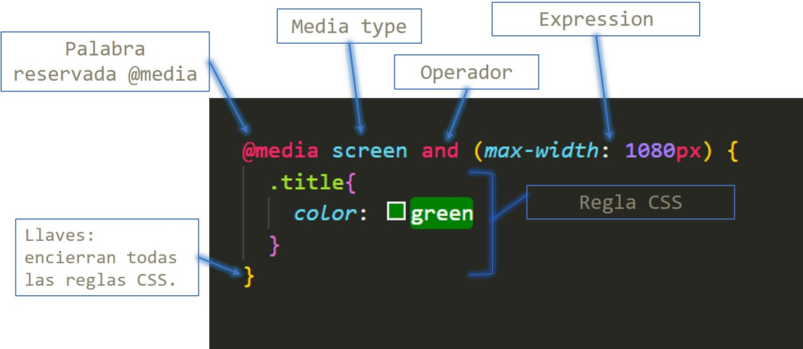

Tipos de media type
Existen diferentes tipos de media type como: all, print, speech y screen. Sin embargo, para el diseño web utilizaremos screen, que es el destinado para las pantallas.
EJEMPLO
Antes de pasar al tema de Media-Querys es importante conocer el término "Diseño Responsivo" el cual se refiere al proceso de adaptar una página al viewport (área visible del navegador que se muestra en la pantalla) de todo tipo de dispositivos, como tablets o móviles.
Actualmente manejamos dos tipos de técnicas en el desarrollo web: mobile first y desktop first.
Otra cosa a tomar en cuenta con el viewport de dispositivos móviles es la manera en la que se va a visualizar tu página, ya que la vista puede ser vertical (portrait) u horizontal (landscape).

Los media queries son utilizados en CSS para cambiar ciertos valores de los elementos dependiendo del tamaño u orientación del viewport.
Existen diferentes tipos de media type como: all, print, speech y screen. Sin embargo, para el diseño web utilizaremos screen, que es el destinado para las pantallas.
EJEMPLO
Para incluir dos o más expresiones en una media query se pueden utilizar operadores lógicos como not, and y only.
EJEMPLO
También se pueden utilizar múltiples queries separadas por comas, si cualquiera de las queries en la lista es verdadera, la hoja de estilo asociada es aplicada, es decir, actua como una operación lógica "or".
EJEMPLO
Consiste en comenzar estilando basándonos en el viewport de dispositivos móviles, Smartphones, Tablets, y posteriormente ir adaptándolo a dispositivos con viewport más grandes como Laptos o PC's.
Consiste en comenzar estilando basándonos en el viewport de dispositivos grandes partiendo de PC's, Laptops, para luego ir adaptando este diseño a viewport más pequeñas, como las de los dispositivos móviles.